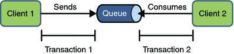

Transacciones. JMS y JavaEE
Transacciones Locales
En un cliente JMS se pueden usar transacciones locales para agrupar bien envíos o bien recepciones en operaciones atómicas. Ya desde el principio hemos visto que una sesión se puede crear como transaccional o no solamente con poner respectivamente a true o false el primer argumento del método Connection.createSession() y hasta ahora solamente hemos trabajado con sesiones no transaccionales. De modo, que mediante los siguientes fragmentos de código crearíamos una sesión transaccional:
Session session = connection.createSession(true, 0); QueueSession queueSession = queueConnection.createQueueSession(true, 0); TopicSession topicSession = topicConnection.createTopicSession(true, 0);
Recordar que el valor 0 es similar a Session.AUTO_ACKNOWLEDGE
session = connection.createSession(true, 0);
JMS no ofrece ningún método de inicio de transacción de forma explícita, de modo que nada más crear la sesión transaccional, la transacción ha comenzado.
Además, JMS aporta los métodos Session.commit() y Session.rollback() que pueden usarse en un cliente, y que supondrán el final de la transacción. El commit significa que todos los mensajes producidos son enviados y se envía acuse de recibo de todos los consumidos. Sin embargo, el rollback en JMS implica que se destruyen todos los mensajes enviados y se recuperan todos los mensajes consumidos y re-enviados aunque hayan expirado.
Toda transacción forma parte de una sesión transaccional. Tan pronto como se llama a commit o rollback, finaliza una transacción y comienza otra (esto se conoce como transaction chaining). Cerrar una sesión transaccional implica un rollback automático de la transacción, incluyendo los envíos y recepciones pendientes.
Finalmente, los métodos anteriores no pueden usarse en EJBs ya que, como veremos en el módulo correspondiente, se usan transacciones distribuidas.
Un aspecto muy importante es que podemos combinar varios envíos y recepciones en una transacción local (no distribuída), pero en ese caso debemos tener en cuenta el orden de las operaciones. Si una transacción consiste solo en sends, solo en receives o la recepción se realiza antes de enviar no hay problema, pero si intentamos usar un mecanismo request/reply entonces siempre que enviemos un mensaje y esperemos recibirlo dentro de la misma transacción el programa se colgará, ya que el envío no se hace efectivo hasta que no se hace un commit.
// No hacer esto outMsg.setJMSReplyTo(replyQueue); producer.send(outQueue, outMsg); consumer = session.createConsumer(replyQueue); inMsg = consumer.receive(); session.commit();
Esto se debe a que al enviar un mensaje dentro de una transacción, realmente no se envía hasta que no se realiza el commit de la transacción, por lo tanto, la transacción no puede contener ninguna recepción que dependa de un mensaje enviado previamente.
Es más, la producción y el consumo de un mensaje no puede ser parte de la misma transacción ya que el intermediario es JMS, el cual interviene entre la producción y la consumición del mensaje. En ese caso debemos hacer una transacción desde el productor al recurso JMS y otra desde éste al consumidor. Analicemos el siguiente gráfico:

El envío de uno o más mensajes a uno o más destinos por parte del cliente 1 puede formar una transacción (producción transaccional), ya que conforma un conjunto de interacciones con el proveedor JMS mediante una única sesión. Del mismo modo, la recepción de uno o más mensajes (consumición transaccional) desde uno o más destinos por parte del cliente 2 también forma una única transacción, y que se realiza desde una sola sesión. Pero como ambos clientes no tienen interacciones directas y están utilizando dos sesiones diferentes, no se puede producir una transacción entre ellos.
Ejemplos
Como hemos comentado, los métodos de commit y rollback de una transacción local están asociados con la sesión. Podemos combinar operaciones con colas y tópicos dentro de una única transacción siempre y cuando utilicemos la misma sesión. Por ejemplo, podemos utilizar la misma sesión para recibir un mensaje desde una cola y enviar un mensaje a un tópico dentro de la misma transacción:
public void recibirSincronoPublicarCommit() throws JMSException {
Connection connection = null;
Session session = null;
QueueReceiver receiver = null;
TopicPublisher publisher = null;
try {
connection = connectionFactory.createConnection();
connection.start();
// Creamos una sesion transaccional
session = connection.createSession(true, 0);
// Creamos el consumidor a partir de una cola
receiver = (QueueReceiver) session.createConsumer(queue);
// Creamos el productor a partir de un topico
publisher = (TopicPublisher) session.createProducer(topic);
// Consumimos y luego publicamos
TextMessage message = (TextMessage) receiver.receive();
System.out.println("Recibido mensaje [" + message.getText() + "]");
publisher.publish(message);
session.commit();
} catch (JMSException jmse) {
System.err.println("Rollback por " + jmse.getMessage());
session.rollback();
} catch (Exception e) {
System.err.println("Rollback por " + e.getMessage());
session.rollback();
} finally {
publisher.close();
receiver.close();
session.close();
connection.close();
}
}
Además, podemos pasar la sesión de un cliente al constructor de un listener de mensajes y utilizarla para crear un productor de mensajes. De este modo, podemos utilizar la misma sesión para recibir y enviar mensajes dentro de un consumidor de mensajes asíncrono.
public void recibirAsincronoPublicarCommit() throws JMSException {
Connection connection = null;
Session session = null;
QueueReceiver receiver = null;
TextListener listener = null;
try {
connection = connectionFactory.createConnection();
// Creamos una sesion transaccional
session = connection.createSession(true, 0);
// Creamos el consumidor a partir de una cola
receiver = (QueueReceiver) session.createConsumer(queue);
listener = new TextListener(session);
receiver.setMessageListener(listener);
// Llamamos a start() para empezar a consumir
connection.start();
// Sacamos el mensaje por consola
System.out.println("Fin asincrono");
} catch (JMSException jmse) {
System.err.println("Rollback por " + jmse.getMessage());
session.rollback();
} catch (Exception e) {
System.err.println("Rollback por " + e.getMessage());
session.rollback();
} finally {
receiver.close();
session.close();
connection.close();
}
}
De modo que el listener puede hacer commit o rollback conforme necesite:
private class TextListener implements MessageListener {
private Session session;
public TextListener(Session session) {
this.session = session;
}
public void onMessage(Message message) {
TopicPublisher publisher = null;
TextMessage msg = null;
// Consumimos y luego publicamos
try {
msg = (TextMessage) message;
System.out.println("Recibido mensaje asincrono [" + msg.getText() + "]");
publisher = (TopicPublisher) session.createProducer(topic);
publisher.publish(message);
session.commit();
} catch (JMSException e) {
System.err.println("Rollback en onMessage(): " + e.toString());
try {
session.rollback();
} catch (JMSException ex) {
}
}
}
}
Transacciones Distribuidas
Los sistemas distribuidos en ocasiones utilizan un proceso de two-phase commit (2PC) que permite a múltiples recursos distribuidos participar en una transacción. Esto implica el uso de un gestor de transacciones que se encarga de cordinar la preparación, commit o rollback de cada recurso que participa en la transacción. Lo más común es que estos recursos sean BBDD, pero también pueden ser proveedores de mensajes.
El proceso de 2PC se realiza bajo el interfaz XA (eXtended Architecture), y en JavaEE lo implementa JTA (Java Transaction API) y los interfaces XA (javax.transaction y javax.transaction.xa). Cualquier recurso que implementa estos interfaces puede unirse a una transacción global mediante un gestor de transacciones que soporte estos interfaces.
Los proveedor JMS que implementan los interfaces XA puede participar en transacciones distribuidas. La especificación JMS ofrece versiones XA de los siguientes objetos:XAConnectionFactory, XAQueueConnection, XAQueueConnectionFactory, XAQueueSession, XASession, XATopicConnectionFactory, XATopicConnection y XATopicSession.
Cada uno de estos objetos trabajar de modo similar a los no-XA. El gestor de transacciones de un servidor de aplicaciones utiliza los interfaces XA directamente, pero el cliente JMS solo ve las versiones no-transaccionales. Así pues, los interfaces XA no estan pensados para que lo utilicen los desarrolladores, sino que los provedores JMS son los que deben implementarlos. En resumen, no debemos preocuparnos en usar estos interfaces, sólo de si nuestro servidor de aplicaciones soporta 2PC, y éste ya se encargará de incluir nuestra operación dentro de una transacción global.
Conexiones Perdidas
Cuando lo conexión de red entre el cliente y el servidor se pierde, el proveedor JMS intentará restablecer la conexión. Si el proveedor no consiguiese la reconexión, debe notificar al cliente de la situación, mediante el lanzamiento de una excepción.
El problema viene cuando tenemos un consumidor asíncrono, el cual no realiza ninguna llamada de envío o recepción. Este consumidor no esta invocando ningún método JMS, sólo está escuchando mensajes, por lo que puede no llegar a detectar la pérdida de la conexión.
JMS ofrece la interfaz ExceptionListener para capturar todas las conexiones perdidas y notificar a los clientes de dicha situación. Este listener se asocia a la conexión. La definción del listener es la siguiente:
public interface ExceptionListener {
void onException(JMSException exception);
}
El proveedor JMS se responsabilizará de llamar a este método de todos los listeners registrados cuando no pueda realizar la reconexión automática. Por lo tanto, el consumidor asíncrono podrá implementar este interfaz para poder actuar en esta situación, e intentar la reconexión de modo manual.
Ejemplo
Por ejemplo, podremos modificar nuestro consumidor para que en el caso de perder la conexión, realice una reconexión manual:
public class ConsumidorAsincrono implements ExceptionListener {
@Resource(mappedName = "jms/ConnectionFactory")
private static ConnectionFactory connectionFactory;
@Resource(mappedName = "jms/Queue")
private static Queue queue;
private Connection connection = null;
private void estableceConexion() {
try {
connection = connectionFactory.createConnection();
connection.setExceptionListener(this);
} catch (JMSException ex) {
ex.printStackTrace(System.err);
}
}
@Override
public void onException(JMSException exception) {
System.err.println("Ha ocurrido un error con la conexion");
exception.printStackTrace(System.err);
this.estableceConexion();
}
public void recibeMensajeAsincronoCola() throws JMSException {
Session session = null;
MessageConsumer consumer = null;
TextoListener listener = null;
try {
this.estableceConexion();
session = connection.createSession(false, Session.AUTO_ACKNOWLEDGE);
consumer = session.createConsumer(queue);
listener = new TextoListener();
consumer.setMessageListener(listener);
connection.start();
} finally {
consumer.close();
session.close();
connection.close();
}
}
public static void main(String[] args) throws Exception {
ConsumidorAsincrono p = new ConsumidorAsincrono();
p.recibeMensajeAsincronoCola();
}
}
Uso de JMS en Aplicaciones JavaEE
En esta sección veremos las diferentes maneras de usar JMS desde una aplicación JavaEE, y sus diferencias respecto a una aplicación cliente.
Anotaciones en Componentes JavaEE
Cuando utilizamos la anotación @Resource en una aplicación cliente, normalmente la declaramos como un recurso estático:
@Resource(mappedName="jms/ConnectionFactory") private static ConnectionFactory connectionFactory; @Resource(mappedName="jms/Queue") private static Queue queue;
Sin embargo, cuando utilizamos estas anotaciones en un ejb de sesión, un MDB o un componente web, no declararemos el recurso estático:
@Resource(mappedName="jms/ConnectionFactory") private ConnectionFactory connectionFactory; @Resource(mappedName="jms/Topic") private Topic topic;
Si lo declaramos estáticos, obtendremos errores de tiempo de ejecución.
EJBs de Sesión para Producir y Recibir Mensajes Síncronos
Una aplicación JavaEE que produce mensajes o que los consume de manera síncrona puede utilizar un EJB de sesión para realizar estas tareas. Pero como la consumición dentro de un bloque síncrono reduce los recursos del servidor, no es una buena práctica realizar un receive dentro de un EJB. Por ello, se suele utilizar un receive con timeout, o un MDB para recibir los mensajes de una manera asíncrona.
El uso de JMS dentro de una aplicación JavaEE es muy similar al realizado en una aplicación cliente, salvando las diferencias en cuanto a la gestión de los recursos y las transacciones.
Gestión de Recursos
Los recursos JMS son la conexión y la sesión. Normalmente, es importante liberar los recursos JMS cuando dejan de utilizarse. Algunas prácticas útiles son:
- Si queremos mantener un recurso únicamente durante la vida de un método de negocio, es una buena idea cerrar el recurso en el bloque finally dentro del método.
- Si queremos mantener un recurso durante la vida de una instancia EJB, es conveniente utilizar un método anotado con @PostConstruct para crear el recurso y otro método anotado con @PreDestroy para cerrarlo. Si utilizásemos un EJB de sesión con estado, para mantener el recurso JMS en un estado cacheado, deberíamos cerrarlo y poner su valor a null mediante un método anotado con @PrePassivate , y volver a crearlo en un método anotado como @PostActive.
Transacciones
En vez de usar transacciones locales, utilizamos transacciones CMT para métodos de los ejbs que realizan envíos o recepciones de mensajes, permitiendo que el contenedor EJB gestione la demarcación de las transacciones. Ya que las transacciones CMT son las que se usan por defecto, no tenemos que utilizar ninguna anotación para especificarlas.
También podemos utilizar transacciones BMT y el interfaz javax.transaction.UserTransaction para demarcar las transacciones de un modo programativo, pero solo debemos hacerlo así si nuestros requisitos son muy complejos y dominamos muy bien los conceptos sobre transacciones. Normalmente, CMT produce el comportamiento más eficiente y correcto.
Ejemplo de un EJB que Envía Mensajes
A continuación mostramos un sencillo EJB que realiza la misma función que el productor de mensajes creado en la primera sesión.
El interfaz remoto es el siguiente:
package es.ua.jtech.jms;
// imports
@Remote
public interface ProductorSLSBRemote {
void enviaMensajeJMS(String mensaje) throws JMSException;
}
Y en cuanto al bean, el código es muy similar al visto como aplicación cliente:
package es.ua.jtech.jms;
// imports
@Stateless
public class ProductorSLSBBean implements ProductorSLSBRemote {
@Resource(name = "jms/ConnectionFactory")
private ConnectionFactory connectionFactory;
@Resource(name = "jms/Queue")
private Queue queue;
public void enviaMensajeJMS(String mensaje) throws JMSException {
Connection connection = null;
Session session = null;
try {
connection = connectionFactory.createConnection();
connection.start();
session = connection.createSession(true, 0);
TextMessage tm = session.createTextMessage(mensaje);
MessageProducer messageProducer = session.createProducer(queue);
messageProducer.send(tm);
} finally {
if (session != null) {
session.close();
}
if (connection != null) {
connection.close();
}
}
}
}
Tal como hemos comentado antes, destacar como las instancias de los recursos administrados ya no son estáticas, así como el cierre de los recursos dentro del bloque finally.
Ejemplo de Aplicación Web que Envía Mensajes
A continuación tenemos un Servlet que envía un mensaje, igual que el EJB anterior:
package es.ua.jtech.jms;
// imports
public class ProductorJMSServlet extends HttpServlet {
@Resource(name = "jms/ConnectionFactory")
private ConnectionFactory connectionFactory;
@Resource(name = "jms/Queue")
private Queue queue;
@Override
protected void doGet(HttpServletRequest request, HttpServletResponse response)
throws ServletException, IOException {
response.setContentType("text/html;charset=UTF-8");
PrintWriter out = response.getWriter();
String mensaje = "Este es un mensaje enviado desde un Servlet";
try {
this.enviaMensajeJMS(mensaje);
out.println("Enviado mensaje: " + mensaje);
} catch (JMSException jmse) {
jmse.printStackTrace(System.err);
} finally {
out.close();
}
}
private void enviaMensajeJMS(String mensaje) throws JMSException {
Connection connection = null;
Session session = null;
try {
connection = connectionFactory.createConnection();
connection.start();
session = connection.createSession(false, Session.AUTO_ACKNOWLEDGE);
TextMessage tm = session.createTextMessage(mensaje);
MessageProducer messageProducer = session.createProducer(queue);
messageProducer.send(tm);
} finally {
if (session != null) {
session.close();
}
if (connection != null) {
connection.close();
}
}
}
}
Como podéis observar, el método de envío de mensajes es exactamente igual (sólo hemos cambiado el método de public a private).
Si lo que queremos es que el Servlet envíe el mensaje a través del EJB anterior, podríamos hacer esto:
package es.ua.jtech.jms;
// imports
public class ProductorEJBServlet extends HttpServlet {
@EJB
private ProductorSLSBRemote productorSLSBBean;
@Override
protected void doGet(HttpServletRequest request, HttpServletResponse response)
throws ServletException, IOException {
response.setContentType("text/html;charset=UTF-8");
PrintWriter out = response.getWriter();
String mensaje = "Este es un mensaje enviado desde un Servlet que llama a un EJB";
try {
productorSLSBBean.enviaMensajeJMS(mensaje);
out.println("Enviado mensaje: " + mensaje);
} catch (JMSException jmse) {
jmse.printStackTrace(System.err);
} finally {
out.close();
}
}
}
En la siguiente sesión repasaremos el ciclo de vida de los EJBs, y veremos como podríamos mejorar el EJB para que tanto la creación como el cierre de la conexiones se realizase únicamente en un sitio, y no una vez por cada método de negocio que tengamos.